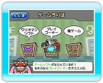
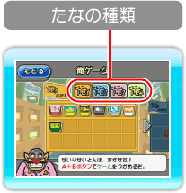
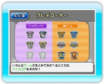

9 |
ゲームうりば |
 |
|
「ワリオマンデパート」の「ゲームうりば」では、ゲームで遊ぶことができます。 
● ゲームうりばメニュー ・ワリオマンソフト ・俺ゲーム 「たくはいセンター」で受け取ったゲームが並びます。ゲームは「ワリオマンソフト」と同じようにプレイできます。 ※消したゲームを元に戻すことはできませんのでご注意ください。 
・プレイコーナー ※ここでのプレイで出現した「ワリオマンソフト」のゲームは、「ワリオマンソフト」のたなに並べられ、いつでもプレイできるようになります。 また、「プレイコーナー」には、以下のような特殊な遊びかたもあります。これらの遊びかたは､
● ゲームの遊びかた ※たなや遊びかたの種類によって、プレイヤーの残り数やステージ数、ゲーム画面の表示は変わります。 ・ボスステージ |
 |
 |
 |